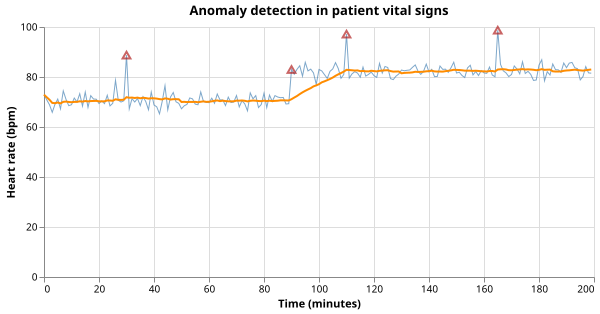

Anomaly Detection in Patient Vital Signs
The Problem
- Intensive care units record physiological signals continuously: heart rate, blood pressure, oxygen saturation, respiratory rate.
- Clinicians cannot watch every channel at every moment, so automated flagging of unusual readings reduces the chance of a dangerous change going unnoticed.
- Two qualitatively different anomalies are common: sustained step changes (the baseline shifts to a new level) and isolated spikes (a single reading is far from the local trend).
- A simple but effective detector compares each reading to a local reference built from the most recent $w$ readings; a deviation beyond a chosen threshold raises a flag.
Rolling Statistics
- A rolling window of width $w$ centred (or trailing) at position $i$ uses only the $w$ most recent observations to estimate the local mean and variance.
- This makes the reference adaptive: it follows slow drifts in the baseline without permanently inflating the variance estimate when a sustained shift begins.
- If $\bar{x}_i$ and $\hat{\sigma}_i$ are the rolling mean and standard deviation, the z-score of reading $x_i$ against the rolling window is:
$$z_i = \frac{x_i - \bar{x}_i}{\hat{\sigma}_i}$$
A trailing window of width 3 contains values [68, 70, 72]. The window mean is 70, and the sample standard deviation is 2. A new reading of 74 arrives. What is the z-score of 74 against this window?
Detecting Anomalies
- A reading is flagged when $|z_i| > \theta$, where $\theta$ is the detection threshold.
- Raising $\theta$ reduces false positives (normal variation incorrectly flagged) at the cost of more false negatives (real anomalies missed); lowering it does the reverse.
- When the rolling standard deviation is zero (all values in the window are identical), no flag is raised: there is no variation to compare against.
A z-score threshold of $\theta = 3$ is replaced with $\theta = 2$. What is the most likely effect on the detector?
- Fewer true anomalies are detected because the bar is now harder to reach.
- Wrong: a lower threshold makes it easier for a reading to exceed the threshold, not harder.
- More readings are flagged, including some that are normal variation rather than genuine anomalies.
- Correct: the detector becomes more sensitive — it catches more anomalies but also produces more false positives.
- Only step changes are detected; spikes are unaffected.
- Wrong: the z-score test is symmetric; it flags any deviation regardless of whether it is sustained or isolated.
- The rolling standard deviation doubles, compensating for the lower threshold.
- Wrong: the standard deviation is computed from the data; changing the threshold does not alter it.
Generating Synthetic Vital Signs
- The baseline is Gaussian noise around 70 bpm (a typical resting heart rate).
- A sustained step change of 12 bpm begins at minute 90, simulating a fever or haemodynamic deterioration.
- Three isolated spikes of 18 bpm above the local baseline are injected at known positions.
SEED = 7493418 # RNG seed for reproducibility
N_POINTS = 200 # number of time points (minutes)
BASELINE_MEAN = 70.0 # baseline heart rate (bpm)
BASELINE_STD = 2.0 # normal beat-to-beat variation (bpm)
STEP_START = 90 # time index where a sustained step change begins
STEP_SIZE = 12.0 # magnitude of the step change (bpm)
# Positions of isolated spike outliers and their magnitude.
SPIKE_POSITIONS = [30, 110, 165]
SPIKE_SIZE = 18.0 # spike magnitude above local baseline (bpm)
def make_vitals_data(
n=N_POINTS,
baseline_mean=BASELINE_MEAN,
baseline_std=BASELINE_STD,
step_start=STEP_START,
step_size=STEP_SIZE,
spike_positions=SPIKE_POSITIONS,
spike_size=SPIKE_SIZE,
seed=SEED,
):
"""Return a Polars DataFrame with columns 'time', 'heart_rate', and 'is_anomaly'.
The baseline is Gaussian noise around baseline_mean.
A sustained step change of step_size bpm begins at step_start.
Isolated spikes of spike_size bpm are injected at spike_positions.
'is_anomaly' marks both step-change positions and spike positions as 1.
"""
rng = np.random.default_rng(seed)
times = np.arange(n)
values = rng.normal(baseline_mean, baseline_std, n)
values[step_start:] += step_size
for pos in spike_positions:
values[pos] += spike_size
anomaly = np.zeros(n, dtype=int)
anomaly[step_start:] = 1
for pos in spike_positions:
anomaly[pos] = 1
return pl.DataFrame({"time": times, "heart_rate": values, "is_anomaly": anomaly})
Rolling Mean and Standard Deviation
def rolling_stats(values, window):
"""Compute trailing rolling mean and standard deviation.
For position i the window covers indices [max(0, i - window + 1), i].
The first window - 1 positions use a shorter window as data accumulates.
Standard deviation uses ddof=1 (sample std); positions with only one
value in the window return std = 0.
"""
n = len(values)
means = np.empty(n)
stds = np.empty(n)
for i in range(n):
start = max(0, i - window + 1)
segment = values[start : i + 1]
means[i] = np.mean(segment)
stds[i] = np.std(segment, ddof=1) if len(segment) > 1 else 0.0
return means, stds
- The trailing window (ending at the current position) is the natural choice for real-time monitoring: a reading can only be compared against previous observations.
- The first $w - 1$ positions use a shorter window as data accumulates; this warm-up period means the detector is less reliable at the very start of the recording.
Flagging Anomalies
def detect_anomalies(values, window, threshold):
"""Flag time points where the value deviates from the rolling mean by more than
threshold standard deviations.
Returns (flagged, means, stds) where flagged is a boolean array.
A position is flagged when |value - rolling_mean| > threshold * rolling_std.
Positions with rolling_std = 0 are never flagged (no variation to compare against).
"""
means, stds = rolling_stats(values, window)
deviations = np.abs(values - means)
flagged = deviations > threshold * stds
return flagged, means, stds
Match each anomaly type to the property that makes it detectable.
| Anomaly | Detectable because |
|---|---|
| Isolated spike | A single reading's z-score exceeds the threshold even though nearby readings are normal |
| Sustained step change | After the window catches up to the new level the z-score may drop, but readings near the transition have large z-scores |
| Slow drift | The rolling mean follows the drift, so z-scores stay small — this detector may miss it |
Visualizing the Results
def plot_vitals(times, values, means, flagged, filename):
"""Save an Altair figure with the time series, rolling mean, and flagged anomalies."""
df = pl.DataFrame({"time": times, "heart_rate": values, "rolling_mean": means})
flag_df = pl.DataFrame({"time": times[flagged], "heart_rate": values[flagged]})
raw_line = (
alt.Chart(df)
.mark_line(color="steelblue", strokeWidth=1, opacity=0.7)
.encode(
x=alt.X("time:Q", title="Time (minutes)"),
y=alt.Y("heart_rate:Q", title="Heart rate (bpm)"),
)
)
mean_line = (
alt.Chart(df)
.mark_line(color="darkorange", strokeWidth=2)
.encode(x="time:Q", y="rolling_mean:Q")
)
anomaly_pts = (
alt.Chart(flag_df)
.mark_point(color="firebrick", size=60, shape="triangle-up")
.encode(x="time:Q", y="heart_rate:Q")
)
chart = alt.layer(raw_line, mean_line, anomaly_pts).properties(
width=550, height=250, title="Anomaly detection in patient vital signs"
)
chart.save(filename)

Testing
- Rolling statistics length
- The output arrays must have the same length as the input regardless of the window size; an off-by-one in the index calculation is the most common bug.
- Rolling statistics known values
- For
[1, 2, 3, 4, 5]with window 3, position 2 covers[1, 2, 3]: mean 2.0, sample std 1.0. Exact integer arithmetic means no tolerance is needed. - Single-element window returns std 0
- At position 0 only one value is in the window; the sample std is undefined ($n - 1 = 0$). The implementation returns 0.0 rather than raising an error or returning NaN.
- Constant signal produces no anomalies
- When every value is identical both the rolling mean and the deviation are zero, so $|z_i| = 0 < \theta$ everywhere. This confirms the zero-std guard works correctly.
- Isolated spike is detected
- A single reading of 100 bpm in a constant 70 bpm sequence produces a z-score of approximately 2.8 against window 10 at threshold 2.0 — the spike must be flagged. The tolerance in the comment derivation is $\sigma \approx 9.5$ giving $z \approx 2.84$, which is a 42% safety factor above the threshold.
- High-threshold flags nothing on normal data
- With $\theta = 10$ (ten rolling standard deviations) and 200 normally distributed readings (std = 2 bpm), no value should be flagged. The maximum expected z-score for 200 independent Gaussian samples is around 3.5, well below 10.
- Step change is eventually detected
- A 15 bpm step change on a 0 bpm noise background produces a z-score above 3 as soon as the window straddles the transition. This test uses noiseless data to guarantee detection.
import numpy as np
import pytest
from vitals import rolling_stats, detect_anomalies
def test_rolling_stats_length():
# Output arrays must match input length regardless of window size.
values = np.arange(10, dtype=float)
means, stds = rolling_stats(values, window=3)
assert len(means) == 10
assert len(stds) == 10
def test_rolling_stats_known_values():
# Position 2 (0-indexed) with window=3 covers values [1, 2, 3].
# Mean = 2.0; sample std (ddof=1) = sqrt(((1-2)^2+(2-2)^2+(3-2)^2)/2) = 1.0.
values = np.array([1.0, 2.0, 3.0, 4.0, 5.0])
means, stds = rolling_stats(values, window=3)
assert means[2] == pytest.approx(2.0)
assert stds[2] == pytest.approx(1.0)
def test_rolling_stats_single_element_window():
# The first position has only one element; std must be 0 (not NaN).
values = np.array([5.0, 6.0, 7.0])
_, stds = rolling_stats(values, window=5)
assert stds[0] == pytest.approx(0.0)
assert not np.isnan(stds[0])
def test_constant_signal_no_anomalies():
# A perfectly constant signal has zero deviation everywhere, so nothing is flagged.
values = np.full(50, 70.0)
flagged, _, _ = detect_anomalies(values, window=10, threshold=2.0)
assert not np.any(flagged)
def test_isolated_spike_detected():
# A single spike far above a constant baseline must be flagged.
# At the spike position the deviation is 30 bpm; with window=10, the
# rolling std at that position is sqrt(9*9 + 27^2)/3 ≈ 9.5, giving a
# z-score of 27/9.5 ≈ 2.8 > 2.0.
values = np.full(50, 70.0, dtype=float)
values[25] = 100.0
flagged, _, _ = detect_anomalies(values, window=10, threshold=2.0)
assert flagged[25]
def test_normal_values_not_flagged_high_threshold():
# With a very large threshold (10 sigma) no normally distributed values
# should be flagged regardless of random seed.
rng = np.random.default_rng(7493418)
values = rng.normal(70.0, 2.0, 200)
flagged, _, _ = detect_anomalies(values, window=20, threshold=10.0)
assert not np.any(flagged)
def test_step_change_eventually_flagged():
# A sustained step change of 15 bpm on a 2 bpm background must eventually
# raise the z-score above 3 once the rolling window sees both levels.
# The first WINDOW positions after the step still have mostly pre-step data,
# so we check that at least one point beyond position step_start + window is flagged.
WINDOW = 20
step_start = 60
values = np.full(150, 70.0, dtype=float)
values[step_start:] = 85.0
flagged, _, _ = detect_anomalies(values, window=WINDOW, threshold=3.0)
assert np.any(flagged[step_start : step_start + WINDOW])
Anomaly detection key terms
- Rolling window
- A fixed-width sliding buffer of the $w$ most recent observations used to estimate local statistics; as new data arrives the oldest observation drops out of the buffer
- Z-score
- The number of standard deviations by which an observation deviates from the local mean; values beyond a chosen threshold are flagged as anomalies
- Detection threshold $\theta$
- The z-score cutoff for raising a flag; a higher threshold reduces false positives but may miss smaller anomalies (lower sensitivity)
- Step change
- A sustained shift in the baseline level; a rolling detector flags readings near the transition but adapts once the window has fully moved past it
- Spike
- An isolated outlier reading that returns to baseline immediately; the rolling window is not contaminated for long so subsequent readings quickly return to normal z-scores
Exercises
Bidirectional window
The trailing window can react only after the anomaly has entered the window. Replace the trailing window with a centred window that looks $w/2$ steps back and $w/2$ steps forward. Show that this detects a spike at the exact position it occurs rather than $w/2$ steps after. What is the cost of using a centred window in a real-time application?
Threshold sweep
Generate 100 replicate datasets with the same parameters but different random seeds. For each dataset count the true positive rate (fraction of injected anomalies flagged) and false positive rate (fraction of normal readings flagged) at thresholds $1, 2, 3, 4$. Plot the resulting ROC curve and find the threshold that maximises the F1 score.
Exponentially weighted mean
Replace the uniform rolling window with an exponentially weighted moving average (EWMA):
$$\bar{x}_i = \alpha x_i + (1 - \alpha) \bar{x}_{i-1}$$
with smoothing factor $\alpha \in (0, 1)$. Derive the corresponding EWMA variance
estimator and re-implement rolling_stats using it. Compare the detection lag between
the uniform and EWMA detectors on the step-change data.
Multivariate anomaly score
A patient has two simultaneous signals: heart rate and respiratory rate. Anomalies in both signals at the same time are more clinically significant than anomalies in just one. Combine the two individual z-scores into a single multivariate score (e.g. the Euclidean norm of the two z-score vectors) and show that it improves detection of anomalies that affect both signals simultaneously while maintaining the per-signal false-positive rate.